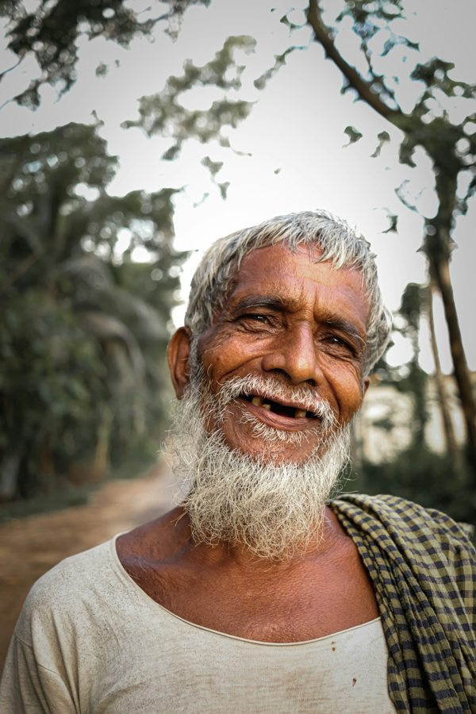
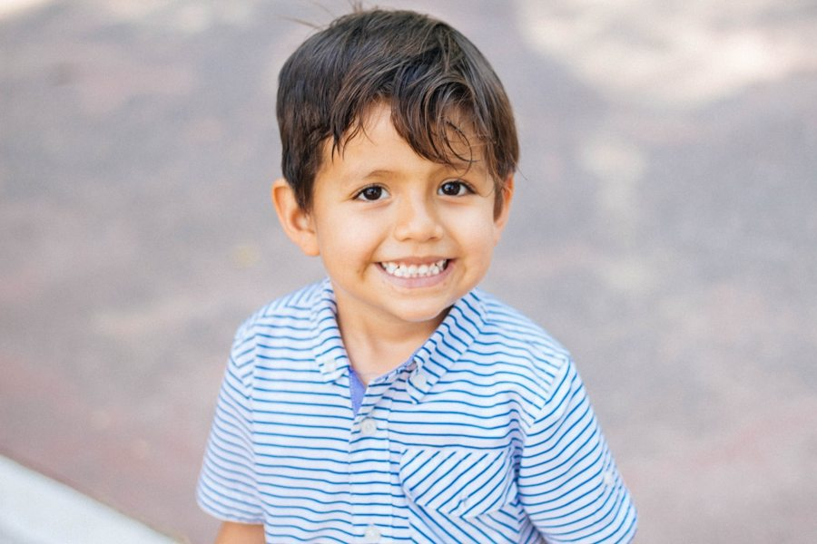

Right now a toddler is shouting because he doesn’t want to eat his lunch. What are the parents doing? They’re filming the scene on a smartphone. Soon after, they’re posting the video on social media. A teenage boy is playing a new song on his guitar. His mother is filming him. Two days later, the boy discovers that other people are watching the video online.
Parents in the UK post approximately 1,000 photos of their children online from when they are born until their fifth birthday, a phenomenon called ‘sharenting’. Babies and toddlers don’t care about this at the time. But a study by the University of Michigan suggests that there is a difference with 10- to 17-year-olds. Teenagers don’t always like parents posting some photos. All babies cry, but adolescents don’t want people to see old photos of themselves doing this.
My family usually eats together.
My parents ______ photos at weekends. (post)
We ______ dinner together. (usually / have)
My brother ______ me with homework. (often / help)

Ben → ______
Max → ______
Jake → ______
Dad → ______
Grandpa Tom → ______
Ben is 13 / 15 / 17.
Jake studies engineering / design / medicine.
Dad changed jobs / moved / retired.
Max can speak very well.
Jake sometimes misses home.
Dad changed jobs recently.
“I don’t really know what job I want yet.”
“I finally have time for the things I enjoy.”
independent
manage money
challenge
retire
stage of life
Finish the sentence, explain and give an example in 30 seconds.